《x86 汇编语言：从实模式到保护模式（第二版）》读书笔记（第 12-20 章）
书接上文。相关代码和注释参考这里。
第 12 章 - 进入保护模式
- 段描述符（8 字节）：保存有段描述信息（段起始地址、段界限和访问属性）。每个段地址在访问前，都需要以这种方式登记。其各个组成部分如下：
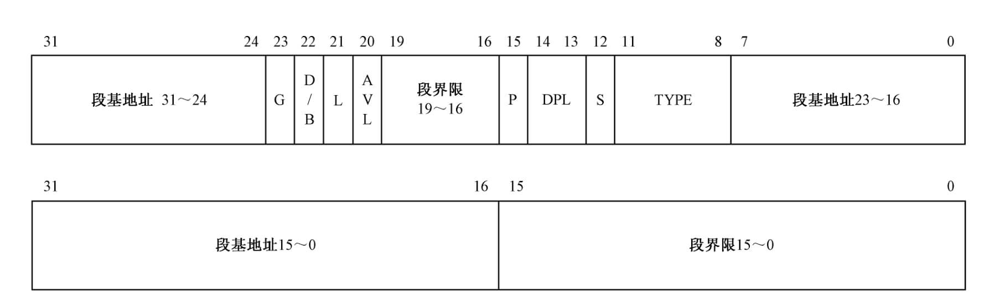
- 段基地址（32 位）：段起始地址。实模式下需左移 4 位；32 位保护模式下若分页则为线性地址，否则位物理地址；
- 段界限（20 位）：段大小，单位由 G 位而定；
- G 位：粒度位，用于解释段界限的含义。0 - 字节（1B ~ 1MB），1 - 4KB（4KB ~ 4GB）；
- S 位：描述符类型。0 - 系统段，1 - 代码段或数据段；
- DPL 位：特权级，指定要访问该段所必须具有的最低特权级。0 ~ 3，0 最高，3 最低；
- P 位：段存在位，指示描述符所对应的段是否存在（可能会被换出到硬盘），不存在时 CPU 可能产生缺页异常；
- D/B 位：默认操作尺寸，用于在 32 位处理器上兼容运行 16 位保护模式的程序，对于不同的段有不同效果；
- D（代码段）：指示指令中默认的有效地址和操作数尺寸。0 - 16 位，1 - 32 位；
- B（栈段）：指定在进行隐式栈操作时使用的寄存器宽度；
- B（向下扩展的数据段）：0 - 段的上部边界是 0xffff，1 - 段的上部边界是 0xffffffff。
- L 位：64 位代码段标志，仅供 64 位处理器使用；
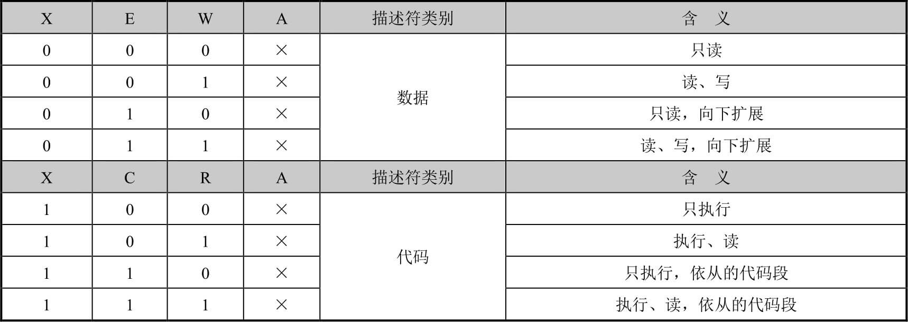
- TYPE 位（4 位）：指示描述符的子类型（XEWA / XCRA）；
- X：是否可执行；
- E：指示段的扩展方向，仅用来决定段界限的含义，和段内偏移量的范围。0 - 向高地址，1 - 向低地址；
- W：是否可写；
- C：是否特权级依从。0 - 非依从，这样的代码段可以从与它特权级相同的代码段调用，或者通过门调用；1 - 依从，允许从低特权级的程序转移到该段执行；
- R：是否允许读出。0 - 不能读出，1 - 可读出；
- A：已访问。用于计算段访问频率，以便虚拟内存管理。
- AVL 位：软件可用位，通常由操作系统自定义使用。
- 全局描述符表（GDT）：存放全局段描述符。
- GDT 最多可存放 8192 个描述符（16 位边界），每个最大指定 4GB 的空间，总空间尺寸可达 32TB。LDT 类似；
- 在进入保护模式之前，需要提前定义 GDT，由于在实模式下只能访问 1MB 内存，故 GDT 通常都定义在 1MB 以下的内存范围中；
- 全局描述符表寄存器（GDTR）：48 位，保存有全局描述符表的位置和大小信息；
- 边界（低 16 位）：GDT 的边界（界限），数值上等于表大小（总字节数）减一；
- 线性地址（高 32 位）：GDT 在内存中的起始线性地址，对应 4GB 的寻址空间。
- 处理器规定，GDT 中的第一个描述符必须是空描述符，或者叫“哑描述符”；
lgdt指令从指定内存地址处加载 6 字节的数据到寄存器 GDTR。
- 保护模式下的内存访问：
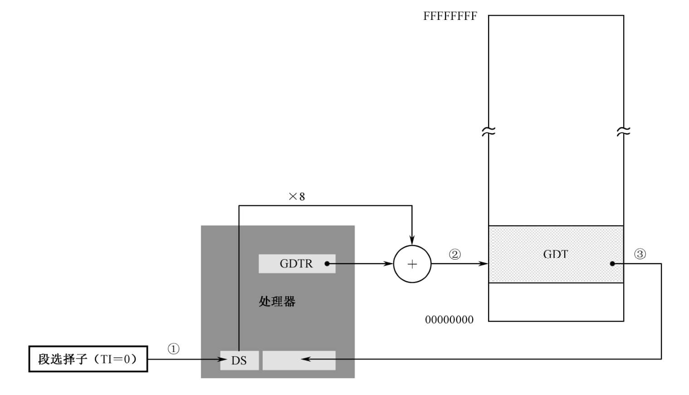
- 保护模式下，不允许使用
mov指令直接改变段寄存器 cs 的内容； - 保护模式下的中断机制和实模式不同，原有的中断向量表不再适用，BIOS 中断也不能使用；
- A20（第 21 条地址线）问题：一些老应用可能仍利用 8086 上 20 位地址线的 “wrap-around” 特性工作。从 80486 开始，处理器增加了 A20M（A20 Mask）引脚用于控制 A20 的启用状态。该引脚低电平有效，可通过 ALT_A20_GATE 位控制开启；
- 段描述符高速缓存：保存有段线性基地址、界限和相关属性。仅由处理器内部使用；
- 对于 32 位处理器（默认 32 位操作尺寸），即使是在实模式下，处理器也会在程序引用段寄存器时隐式初始化段描述符高速缓存（在进入保护模式后，自动以 16 位保护模式运行），并在后续段不变的情况下直接使用这些内容；
- 段选择子（16 位）：用于在 32 位处理器下进行段选择。该部分组成如下：
- RPL（第 0~1 位）：请求特权级。表示给出当前选择子的那个程序的特权级别；
- TI（第 2 位）：描述符表指示器。0 - 描述符在 GDT 中，1 - 描述符在 LDT 中；
- 索引号（第 3~15 位）：用于在描述符表中选择一个段描述符。
- CR0（Control Register 0）寄存器：32 位，包含了一系列用于控制处理器操作模式和运行状态的标志位。
- PE 位（位 0）：0 - 未进入保护模式，1 - 进入保护模式。
- PG 位（位 31）：0 - 关闭分页功能，1 - 开启分页功能。
- 处理器建议，在进入保护模式后，执行的第一条指令应当是跳转或者过程调用指令，以清空流水线和乱序执行的结果，并串行化处理器。
第 13 章 - 操作数和有效地址的尺寸
- 操作尺寸：指令操作的数据长度及指令在访问内存时的有效地址长度。
- 两种操作尺寸类型：
- 16 位操作尺寸：8086、80286。操作数长度 8 位或 16 位，有效地址长度 16 位；
- 32 位操作尺寸：兼容 16 位操作尺寸指令。操作数长度 8 位或 32 位，有效地址长度 32 位。
- 16 位操作尺寸的指令和 32 位操作尺寸的指令可能具有相同的机器码：
// 以下两条汇编指令具有相同的机器码：“8B 50 02”。
mov dx, [bx + si + 0x02] // 16 位操作尺寸；
mov edx, [eax + 0x02] // 32 位操作尺寸；
- 处理器使用的操作尺寸由段描述符中的 “D“ 位决定。默认情况下是 16 位操作尺寸（值 0）。通过用段描述符来刷新 cs 描述符高速缓存器，可以让处理器在一个新的代码段内以新的操作尺寸执行；
- 操作尺寸反转前缀：为机器指令添加该前缀可以反转（16 <-> 32）操作数和有效地址尺寸（可叠加使用）；
- 0x66：反转操作数尺寸；
- 0x67：反转有效地址尺寸。
- 伪指令 bits：通知编译器，编译后面的指令时，应当假定处理器的默认操作尺寸。
bits 16
mov cx, dx
mov eax, ebx
- x86 处理器机器指令组成：
- 前缀：重复前缀（rep / repe / repne）、段超越前缀（es:）、总线封锁前缀（lock）等；
- 操作码：指示执行什么样的操作，比如传送、加法、减法、乘法、除法、移位等；
- 寻址方式和操作数类型：给出了指令的寻址方式，以及寄存器的编号；
- 立即数：参与指令执行的立即数；
- 位移：位移则是有效地址的一部分。
- 32 位操作尺寸下的指令扩展：
push指令：- 无论在什么时候，处理器都不会压入一字节，要么压入字，要么压入双字；
- push byte 0x55：立即数参数 - 会被符号扩展到对应的操作尺寸然后入栈（byte 用于描述立即数的大小）；
- push eax：GPR 寄存器/内存参数 - 压入数据大小视操作数大小而定（字/双字）；
- push cs：段寄存器参数 - 零扩展到对应的操作尺寸然后入栈。
第 14 章 - 存储器的保护
- 不同操作尺寸下的直接绝对远转移指令：
jmp 0x0010:dword flush ; 32 bits effective address.
jmp 0x0010:flush ; 16 bits effective address.
- 处理器更新段选择子时的验证过程：
- 段选择子索引号 * 8 + 7 <= GTD 边界（存放于 GDTR）。不满足要求则产生异常中断 13，段寄存器中原值不变；
- 对于 ds、es、fs 和 gs 段寄存器的选择器，可以向其加载数值为 0 的选择子，但不能用于内存访问。
- 验证取出的描述符类别（TYPE 位）。参考下表，标记 “Y” 则适用于对应段寄存器；
- 代码段在任何时候都是不可写的，如需修改，则要为该段安装一个新描述符，并将其定义为可读可写的数据段。
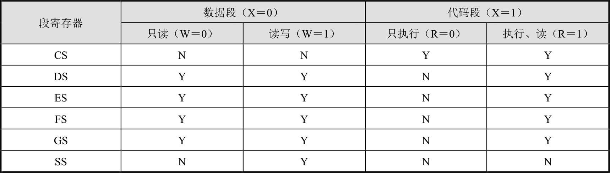
- 检查描述符，若 “P=0” 则处理器中止，并触发异常中断 11，表明该段不在物理内存中。否则，将描述符加载到段寄存器的描述符高速缓存器，同时置 “A” 位。
- 段界限计算：
| 属性 | 实际段界限 | 范围 |
|---|---|---|
|
|
[1, 最大实际段界限 + 1] |
|
|
[最小实际段界限 + 1, 最大实际段界限] |
第 15 章 - 程序的动态加载和执行
- 操作系统内核通常不会被直接放到 MBR 里，因为其体积较大。计算机一般先从主引导程序开始执行，加载内核，并转交控制权。然后，内核负责加载用户程序，并提供各种操作系统接口给用户程序调用。
- 操作系统内核的基本结构：
- 初始化代码：从 BIOS 接管 CPU 和计算机硬件的控制权，安装基本的段描述符，初始化最初的执行环境。然后，从硬盘读取和加载内核的剩余部分，创建组成内核的各个内存段；
- 内核代码段：分配内存，读取和加载用户程序，控制用户程序的执行；
- 内核数据段：一段可读写的内存空间，供内核自己使用；
- 公共例程段：提供各种用途和功能的子过程以简化代码的编写。这些例程既可以用于内核，也供用户程序调用。
cpuid指令：返回 CPU 的标识和特性信息。eax 中存放主功能号，ecx 中存放子功能号。
- 80486 处理器的后期版本开始引入；
- 若 eflags 寄存器的 ID 位（位 21）为 0 则不支持该指令；
- 主功能号 0 用于查询该指令支持的最大主功能号。
- 32 位计算机系统建议内存地址在 4 字节对齐，这样可以加快访问速度。
- 一种程序的动态加载和执行方案：
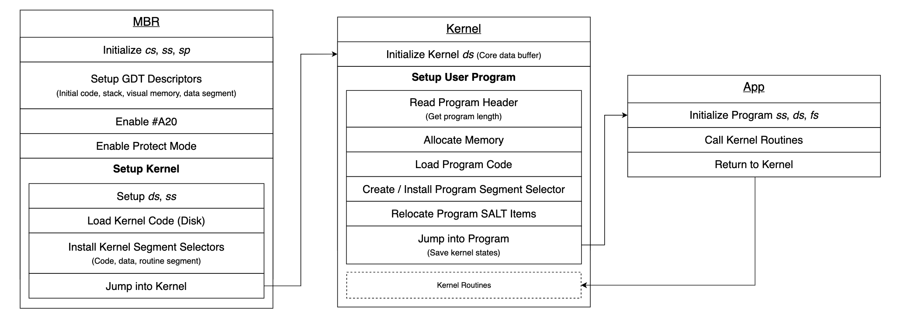
第 16 章 - 任务和特权级保护
- 任务：
- 程序是为了完成某个特定工作而记录在载体上的指令和数据，其正在执行中的一个副本，叫作任务（进程）；
- 为了有效隔离运行中的多个任务，处理器建议每个任务都应当具有自己的描述符表 LDT（Local Descriptor Table），并把专属于自己的那些段放到其中；
- LDT 仅属于某个任务；
- LDT 的第一个描述符是可以使用的（不需要设置 NULL 描述符）；
- LDT 中最多可定义 8192 个段（13 位索引号），长度最大为 64KB；
- 当前正在执行任务的 LDT 信息（位置，大小）存放于 LDTR。当发生任务切换时，LDTR 的内容被更新，指向新任务的 LDT；
- 为了追踪 LDT，CPU 要求在 GDT 中安装每个 LDT 的描述符。当要使用这些 LDT 时，可以用它们的选择子来访问 GDT，将 LDT 描述符加载到寄存器 LDTR。LDT 描述符中的 S 位固定为 0，表示系统的段描述符或者门描述符。
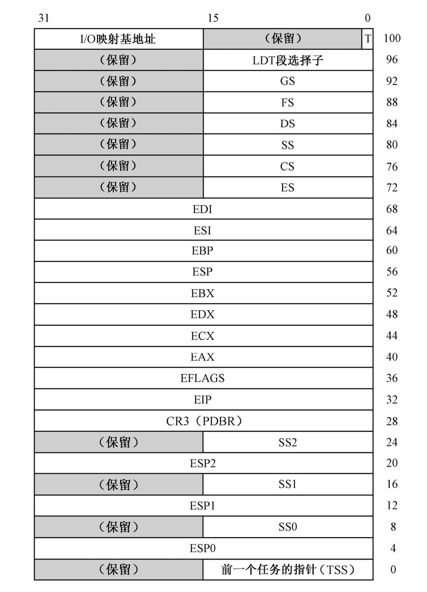最小 TSS 的基本结构
- 每个任务都使用一个额外的内存区域来保存相关状态信息，以便于任务切换。该区域即“任务状态段 TSS（Task State Segment）”；
- TSS 最小尺寸 104 字节（小于该尺寸会引发处理器中断）；
- 任务寄存器 TR（Task Register）用于指向当前任务的 TSS。当发生任务切换时，TR 的内容被更新，指向新任务的 TSS；
- TSS 对应的描述符也必须安装在 GDT 中，一方面是为了对 TSS 进行段和特权级的检查，另一方面也是执行任务切换的需要。描述符格式同 LDT，其中 TYPE = [1001]，B 位为 0 表示任务不忙。任务开始执行时，或处于挂起状态（临时被中断执行）时，由处理器固件把 B 位置 1；
- TSS 中包含的字段：
- 前一个任务的 TSS 指针：在多任务系统中，从一个任务切换到另一个任务时，任务之间就形成了嵌套关系。TSS 内偏移为 0 的位置可以用来记录和追踪前一个任务。即，在这里记录前一个任务的 TSS 描述符的选择子；
- SS0 / SS1 / SS2：分别是 0、1 和 2 特权级的栈段选择子。静态，CPU 不会修改；
- ESP0 / ESP1 / ESP2：分别是 0、1 和 2 特权级栈的栈顶指针。静态，CPU 不会修改；
- CR3：分页相关；
- 偏移为 32～92 的区域：处理器各个寄存器的快照部分，用于在进行任务切换时，保存处理器的状态以便将来恢复现场；
- LDT 段选择子：当前任务的 LDT 描述符选择子；
- I/O 映射基地址：指向 “I/O Permission Bitmap” 的开头，该映射区最后一字节必须是 0xff。如果该字段值大于等于 TSS 段界限，则表明没有设置映射区。
- 任务会在自己的局部空间运行，当它需要操作系统提供的服务时，转入全局空间执行；
- 全局地址空间（由 GDT 定义）：所有任务共有的，含有操作系统的软件和库程序，以及可以调用的系统服务和数据；
- 局部地址空间（由 LDT 定义）：每个任务各自的数据和代码，与任务所要解决的具体问题有关，彼此并不相同。
- 任务不可重入：在执行任务切换时，新任务的状态不能为忙。因中断、
iret、call和jmp指令发起任务切换时，处理器固件会检测新任务 TSS 描述符的 B 位，如果为 “1”，则不允许执行这样的切换。
- 特权级保护：
- 特权级保护机制只在保护模式下才能启用；
- 计算机系统的脆弱性在于一条指令就能改变它的整体运行状态，比如停机指令
hlt和对控制寄存器 cr0 的写操作； - 当处理器正在一个代码段中取指令和执行指令时，那个代码段的特权级叫作当前特权级 CPL（Current Privilege Level）。正在执行的这个代码段，其选择子位于段寄存器 cs 中，其最低两位就是当前特权级的数值；
- 定义于段描述符（DPL：访问该段需要的最低特权级）和选择子（RPL：请求特权级）中；
- Intel 处理器可以识别 4 个特权级别 0~3，较大的数值意味着较低的特权级别，反之亦然；
- 0：操作系统核心。用于执行特权指令；
- 1~2：系统服务程序（如：设备驱动）；
- 3：普通应用程序。
- I/O 特权级：限制各个特权级别所能执行的 I/O 操作。标志寄存器上的 IOPL 位（12~13），代表当前任务的 I/O 特权级别；
- CPL <= IOPL：可直接访问 I/O 地址空间的任何端口；
- CPL > IOPL：查看任务 TSS 段中 “I/O Permission Bitmap” 对应位的值，若为 0 则可访问；否则产生 #GP 异常。
- 除非是远过程返回（
retf）或者中断返回（iret），在任何时候，都不允许将控制从较高的特权级转移到较低的特权级。 - 引入请求特权级 RPL 的原因是处理器在遇到一条将选择子传送到段寄存器的指令时，无法区分真正的请求者是谁。但是，引入 RPL 本身并不能完全解决这个问题，这只是处理器和操作系统之间的一种协议，处理器负责检查请求特权级 RPL，判断它是否有权访问，但前提是提供了正确的 RPL；内核或者操作系统负责鉴别请求者的身份，并有义务保证 RPL 的值和它的请求者身份相符；
- 特权检查规则：
- 控制直接转移到非依从代码段（修改 cs）：
- 当前 CPL = 目标代码段描述符的 DPL；
- 当前 RPL = 目标代码段描述符的 DPL。
- 控制直接转移到依从代码段（修改 cs）：
- 当前 CPL >= 目标代码段描述符的 DPL；
- 当前 RPL >= 目标代码段描述符的 DPL。
- 访问数据段（修改 ds、es、fs、gs）：高特权级别的程序可以访问低特权级别的数据段，但低特权级别的程序不能访问高特权级别的数据段。
- 当前 CPL <= 目标数据段描述符的 DPL；
- 当前 RPL <= 目标数据段描述符的 DPL。
- 访问栈段（修改 ss）：
- 当前 CPL = 目标栈段描述符的 DPL；
- 当前 RPL = 目标栈段描述符的 DPL。
- 控制直接转移到非依从代码段（修改 cs）：
arpl是典型的操作系统指令，它通常用于调整应用程序传递给操作系统的段选择子，使其 RPL 字段的值和应用程序的特权级相匹配。为了防止恶意的数据访问，操作系统应该从当前栈中取得用户程序的代码段选择子（调用者代码段寄存器 cs 的内容）作为源操作数，并把作为参数传递进来的数据段选择子作为目的操作数，来执行arpl指令，把数据段选择子的请求特权级 RPL 调整（恢复）到调用者的特权级别上。
- 门：另一种在特权级之间转移控制的方法。
- 门描述符用于描述可执行的代码，如一段程序、一个过程（例程）或者一个任务；
- 调用门：不同特权级之间的过程调用；
- 中断门/陷阱门：作为中断处理过程使用；
- 任务门：对应单个任务，用来执行任务切换。
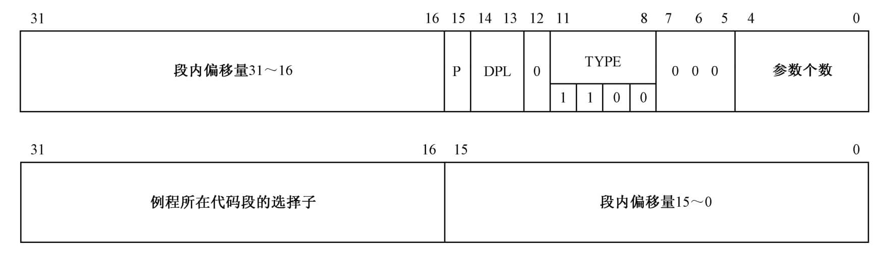调用门描述符结构
- 调用门描述符 64 位，其中定义了目标过程（例程）所在代码段的选择子，以及段内偏移。
- TYPE（4 位）：表示门的类似（1100 为“调用门”）；
- 例程所在代码段选择子（16 位）；
- 例程段内偏移量（32 位）；
- P 位：有效位（1 - 有效，0 - 无效），可用于统计门调用频率；
- 参数个数：需要从旧栈拷贝的，供例程使用的参数个数。最多可传 31 个参数；
- DPL 位：特权级，限定哪些特权级的程序可以访问此门。必须同时符合以下两个条件：
- 当前 CPL <= 调用门描述符的 DPL / 当前 RPL <= 调用门描述符的 DPL；
- 当前 CPL >= 目标代码段描述符的 DPL。
- 调用门描述符可以使用两种方式调用：处理器在执行这条指令时，会用该选择子访问 GDT/LDT，检查那个选择子，看它指向的是调用门描述符，还是普通的代码段描述符。如果是前者，就按调用门来处理（32 位偏移量会被忽略）；否则，按一般的段间控制转移处理。
jmp far：可以将控制通过门转移到比当前特权级高的代码段，但不改变当前特权级别；call far：当前特权级会提升到目标代码段的特权级别（栈段要求）。
- 控制转移（call far）时的切换过程：
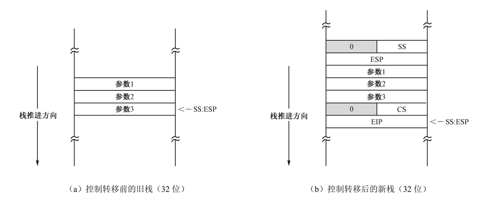
- 使用目标代码段的 DPL（也就是新的 CPL）到当前任务的 TSS 中选择一个栈，包括栈段选择子和栈指针；
- 从 TSS 中读取所选择的段选择子和栈指针，并用该选择子读取栈段描述符。在此期间，任何违反段界限检查的行为都将引发处理器异常中断（无效 TSS）；
- 检查栈段描述符的特权级和类型，并可能引发处理器异常中断（无效 TSS）；
- 临时保存当前栈段寄存器 ss 和栈指针 esp 的内容；
- 把新的栈段选择子和栈指针代入寄存器 ss 和 esp，切换到新栈；
- 将刚才临时保存的 ss 和 esp 的内容压入当前栈；
- 依据调用门描述符“参数个数”字段的指示，从旧栈中将所有参数都复制到新栈中。如果参数个数为 0，不复制参数；
- 将当前段寄存器 cs 和指令指针寄存器 eip 的内容压入新栈，通过调用门实施的控制转移一定是远转移，所以要压入 cs 和 eip；
- 从调用门描述符中依次将目标代码段选择子和段内偏移传送到寄存器 cs 和 eip，开始执行被调用过程。
- 控制返回（retf）的切换过程：
- 检查栈中保存的寄存器 cs 的内容，根据其 RPL 字段决定返回时是否需要改变特权级别；
- 从当前栈中读取寄存器 cs 和 eip 的内容，并针对代码段描述符和代码段选择子的 RPL 字段实施特权级检查；
- 如果远返回指令是带参数的，则将参数和寄存器 esp 的当前值相加，以跳过栈中的参数部分。最后的结果是寄存器 esp 指向调用者 ss 和 esp 的压栈值。注意，
retf指令的字节计数值必须等于调用门中的参数个数乘以参数长度； - 如果返回时需要改变特权级，从栈中将 ss 和 esp 的压栈值代入段寄存器 ss 和指令指针寄存器 esp，切换到调用者的栈。在此期间，一旦检测到有任何界限违例的情况都将引发处理器异常中断；
- 如果远返回指令是带参数的，则将参数和寄存器 esp 的当前值相加，以跳过调用者栈中的参数部分。最后的结果是调用者的栈恢复到平衡位置；
- 如果返回时需要改变特权级，检查寄存器 ds、es、fs 和 gs 的内容，根据它们找到相应的段描述符。要是有任何一个段描述符的 DPL 高于调用者的特权级（返回后的新 CPL），处理器将把数值 0 传送到该段寄存器。
- 如何从任务的 0 特权级全局空间转移到它自己的 3 特权级空间正常执行？使寄存器 TR 和 LDTR 指向这个任务，然后假装从调用门返回。
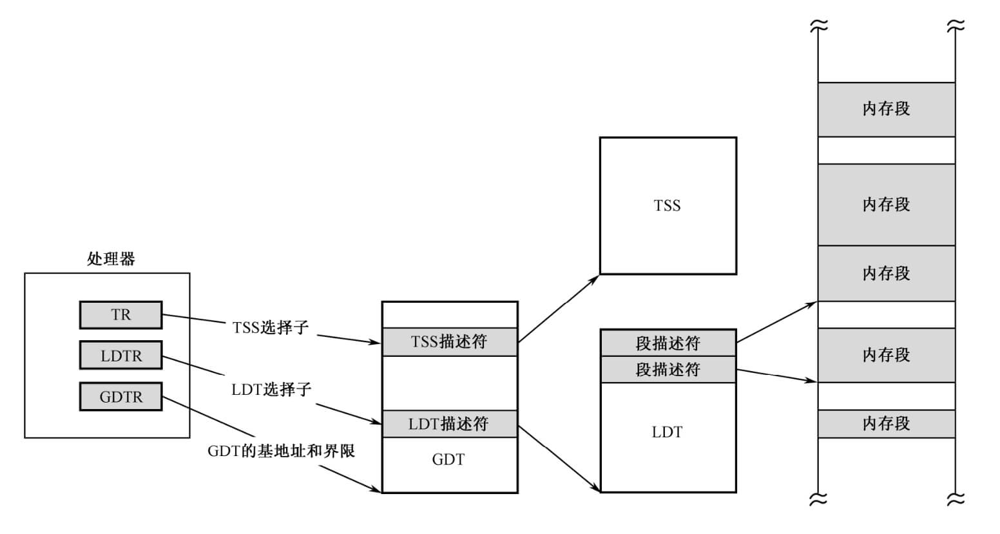
- 在将 TSS 选择子加载到寄存器 TR 之后，处理器用该选择子访问 GDT 中对应的 TSS 描述符，将段界限和段基地址加载到任务寄存器 TR 的描述符高速缓存器部分。同时，处理器将该 TSS 描述符中的 B 位置 “1”，也就是标志为“忙”，但并不执行任务切换；
- 在将 LDT 选择子加载到寄存器 LDTR 之后，处理器用该选择子访问 GDT 中对应的 LDT 描述符，将段界限和段基地址加载到 LDTR 的描述符高速缓存器部分；
- 通过 TCB 访问应用程序头部选择子，取出栈段选择子和栈指针，以及代码段选择子和入口点，并将它们顺序压入当前的0特权级栈中；
- 执行
retf假装从调用门返回。
- 基于特权级保护的任务加载流程：
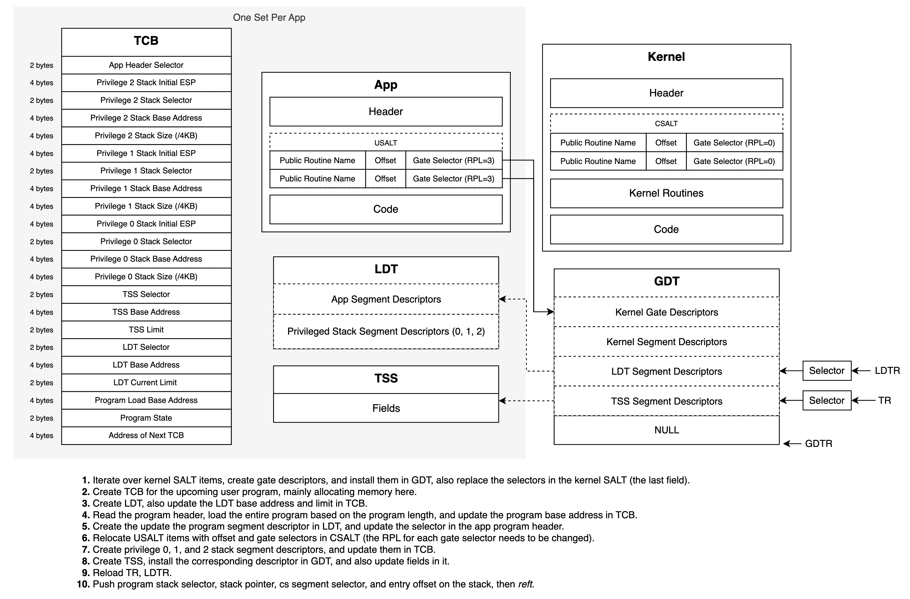
第 17 章 - 协同式任务切换
- 常见的任务切换策略：
- 协同式：从一个任务切换到另一个任务，需要当前任务主动地请求暂时放弃执行权，或者在通过调用门请求操作系统服务时，由操作系统“趁机”将控制转移到另一个任务。这种方式依赖于每个任务的“自律”性，当一个任务失控时，其他任务可能得不到执行的机会；
- 抢占式：在这种方式下，可以安装一个定时器中断，并在中断服务程序中实施任务切换。硬件中断信号总会定时出现，不管处理器当时在做什么，中断都会适时地发生，而任务切换也就能够顺利进行。在这种情况下，每个任务都能获得平等的执行机会。而且，即使一个任务失控，也不会导致其他任务没有机会执行。
协同式任务切换：可以将内核本身作为一个独立的任务运行，我们要在内核任务和普通的用户任务之间来回切换。内核任务的另一个重要工作是创建其他任务，管理它们，所以称作任务管理器（程序管理器）。基本思路是：从任务链表 TCB 中找到下一个状态为空闲的任务，然后切换到这个任务。
保护模式下的中断：使用“中断描述符表”，该表中存放有门描述符（中断门、陷阱门和任务门）。当中断发生时，处理器用中断号乘以 8（描述符尺寸），作为索引访问中断描述符表，取出门描述符。门描述符中有中断处理过程的代码段选择子和段内偏移量。接着，转移到相应的位置去执行。当中断发生时，可以执行常规的中断处理过程，也可以进行任务切换，若当前 TSS 上 eflags 的 NT 位（位 14）为 1，则表示当前正在执行的任务嵌套于其他任务内，并且能够通过 TSS 任务链接域的指针返回到前一个任务。无论任何时候处理器碰到
iret指令，都要检查 NT 位，如果此位是 0，表明是一般的中断过程，按一般的中断返回处理，即，中断返回是任务内的（中断处理过程虽然属于操作系统，但属于任务的全局空间）；如果此位是 1，则表明当前任务之所以能够正在执行，是因为中断了别的任务。因此，应当返回原先被中断的任务继续执行。此时，由处理器固件把当前任务寄存器 eflags 的 NT 位改成 “0”，并把 TSS 描述符的 B 位改成 “0”（非忙）。在保存了当前任务的状态之后，接着，用新任务（被中断的任务）的 TSS 恢复现场。硬件任务切换：x86 处理器的硬件可以自动进行任务切换，只需要给出新任务的 TSS 选择子或者任务门选择子即可。这个切换过程简单，但是处理器固件要进行各种检查工作，非常耗时。因此在现实中，硬件任务切换就成了摆设，在流行的操作系统诸如 Windows 和 Linux 中，从来没有用过。也正是因为没有人用，所以，在 64 位处理器上，除非是在传统的保护模式下运行原有的 32 位程序，否则不再支持硬件切换。
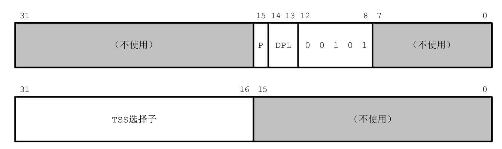任务门描述符结构
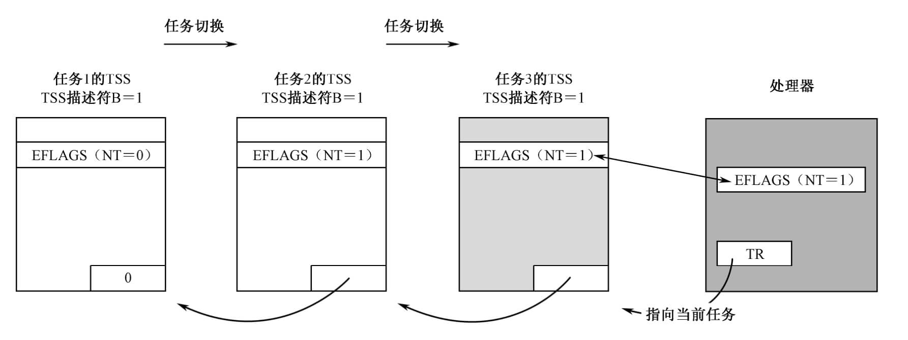任务嵌套（基于“中断”或“远过程调用指令”）
- 基于中断（任务门）：中断号直接对应任务门来执行任务切换。任务门描述符中 TSS 选择子对应新任务；P 位指该门是否有效（1-有效）；DPL 是任务门描述符的特权级，但对因中断而发起的任务切换不起作用；
- 基于 call：操作数是任务的 TSS 描述符选择子或任务门。
call指令发起的任务切换类似于中断方式。当前任务（旧任务）TSS 描述符的B位保持原来的 “1” 不变，寄存器 eflags 的 NT 位也不发生变化；新任务 TSS 描述符的 B 位置 “1”，寄存器 eflags 的 NT 位也置 “1”，表示此任务嵌套于其他任务中。同时，TSS 任务链接域的内容改为旧任务的 TSS 描述符选择子； - 基于 jmp：同上。但发起的任务切换不会形成任务之间的嵌套关系。
- 处理器将控制转移到其他任务的几种方式：
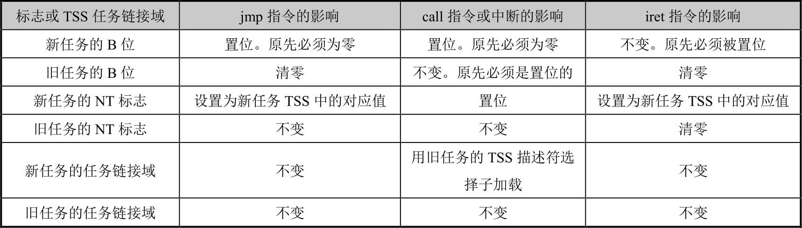不同任务切换方法对 B 位、NT 位和任务链接域的影响
- 当前程序、任务或者过程执行一个将控制转移到 GDT 内某个 TSS 描述符的
jmp或者call指令； - 当前程序、任务或者过程执行一个将控制转移到 GDT 或者当前 LDT 内某个任务门描述符的
jmp或者call指令； - 一个异常或者中断发生时，中断号指向中断描述表内的任务门；
- 在寄存器 eflags 的 NT 位置位的情况下，当前任务执行了一个
iret指令。
第 18 章 - 中断和异常的处理与抢占式多任务
- Intel 处理器在保护模式下的中断和异常：
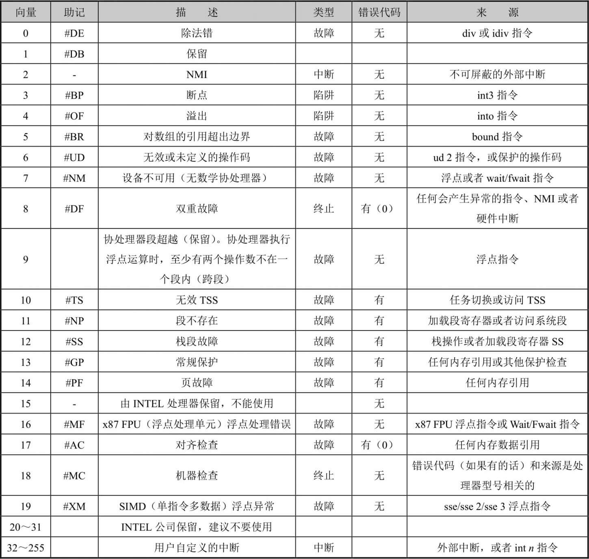
- 保护模式下的中断：
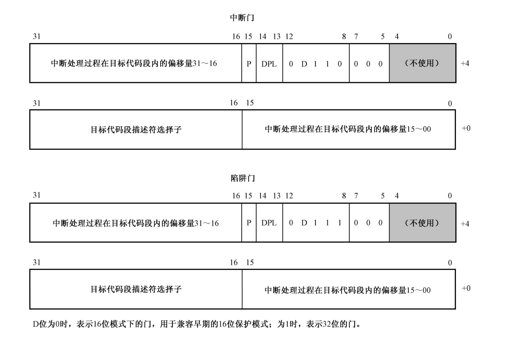中断门、陷阱门描述符结构
- 基于中断描述符表（Interrupt Descriptor Table, IDT）。表中保存的是和中断处理过程有关的描述符，包括：中断门、陷阱门和任务门（均用于控制转移）；
- 中断门、陷阱门描述符只允许存放在 IDT 内，任务门可以位于 GDT、LDT 和 IDT 中；
- IDT 在内存中的线性基地址和界限保存在 IDTR 寄存器中，其结构同 GDTR（16 位边界 + 32 位线性地址）。由于处理器只能识别 256 种中断，故通常只使用 2KB，其他空余的槽位应当将描述符的 P 位清零；
- 为了利用高速缓存使处理器的工作性能最大化，建议 IDT 的基地址是 8 字节对齐的；
- 中断门进入处理程序时，IF 会被复位，以禁止嵌套的中断；陷阱门由于优先级较低，则允许嵌套的其他中断优先处理。
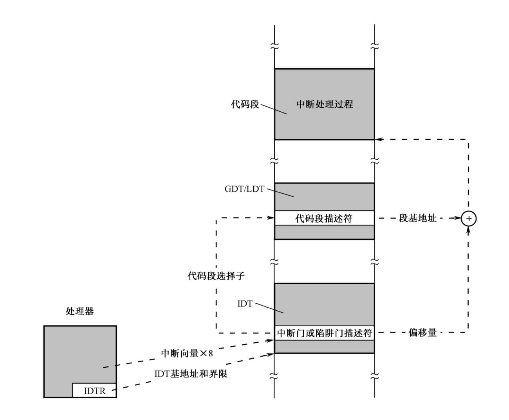保护模式下的中断处理过程（中断门、陷阱门）
- 中断和异常处理程序的特权级保护：
- 目标代码段描述符的特权级（可以用门描述符中的段选择子从 GDT 或 LDT 中找到）需要高于或等于当前特权级 CPL，即满足 “CPL >= 目标代码段 DPL。否则，不允许将控制转移到中断或异常处理程序，引发 #GP 异常；
- 不检查 RPL；
- 中断门、陷阱门描述符的 DPL 只在软中断
int和单步中断int3，以及into引发的中断和异常处理情况下进行检查，需满足 “CPL <= 门描述符 DPL”，以防止低特权级的软件通过软中断指令访问一些只为内核服务的例程。对于硬件中断和处理器检测到异常情况而引发的中断处理，不检查门的 DPL。
- 控制转移到中断/异常处理程序时的情况：
- （特权级不同时，切换栈）根据处理程序的特权级别，从当前任务的 TSS 中取得栈段选择子和栈指针。处理器把旧栈的选择子和栈指针（ss，esp）压入新栈。毕竟，中断处理程序也是当前任务的一部分；
- 处理器把 eflags、cs 和 eip 的当前状态压入新栈；
- 对于有错误代码的异常，处理器还要把错误代码压入新栈，紧挨着 eip 之后。
- 错误代码：有些异常产生时，处理器会在异常处理程序或中断任务的栈中压入一个错误代码。这意味着异常和特定的段选择子或中断向量有关。
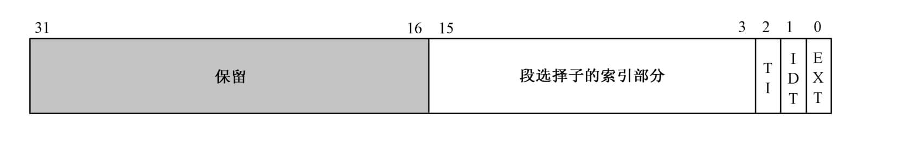错误代码格式
- 基本格式：
- EXT 位：置位时，表示异常是由 NMI、硬件中断等外部事件（External Event）引发的；
- IDT 位：指示段选择子的索引部分的位置。1 - IDT；0 - GDT、LDT；
- TI 位：IDT 为 “0” 时有效。0 - GDT；1 - LDT；
- 段选择子的索引部分：即“索引号”。
- 返回时，需要手动从栈中移去（或弹出）错误代码。
- 利用硬件中断进行任务切换的问题：效率低。（在 64 位操作系统上已不支持）。
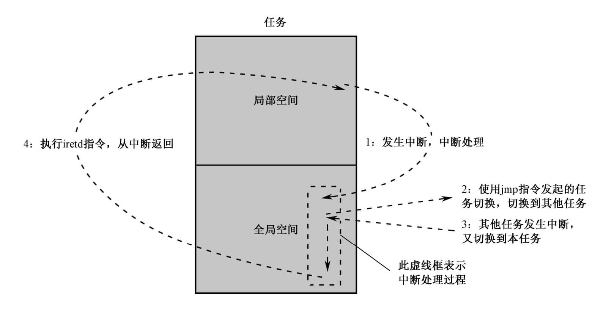利用硬件中断实施任务切换的全过程
- 遍历 TCB 链，找到当前任务，也就是寻找那个状态值为 0xffff 的节点。如果找不到，或者链表为空，则直接转到步骤 6；
- 如果找到了，则从当前任务的节点开始继续向后寻找一个状态为空闲的节点，即，状态值为 0x0000 的节点。如果找到，则转到步骤 4；
- 如果到达链表末端也没有找到，则返回链表头，从头寻找，直至再次遇到当前任务的节点。如果还没有找到，直接转到步骤 6；
- 如果找到了，将当前任务的状态置为 0x0000，将新任务的状态置为 0xffff；
- 使用
jmp指令从当前任务切换到新任务（当中断发生、控制转移到其他任务的时候，旧任务的状态是停留在中断处理过程中的，该任务的 TSS 可以保存这一状态。当下一次从其他任务切换到这个任务后，将继续执行未完成的中断处理过程，并在过程的最后执行中断返回指令，于是返回到当初发生中断的地方继续执行）； - 执行
iretd指令，中断返回。
第 19 章 - 分页机制和动态页面分配
- 段页式内存管理机制：
- 为了解决分段机制引起的“内存碎片化”问题，从 80386 处理器开始，引入了分页机制。该机制只能在保护模式下开启。
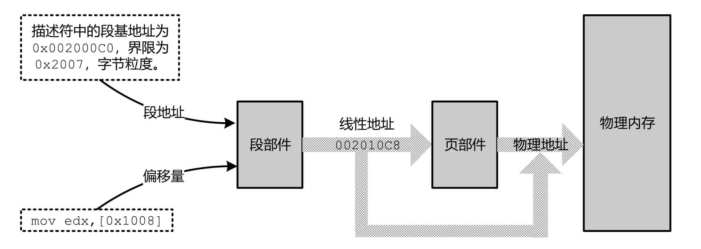开启分页后，由页部件将线性地址转换为物理地址
- 页的最小单位是 4KB（页的物理地址，其低 12 位始终为全零）；
- 开启分页后，所有任务的地址空间是强制分离的，即每个任务都有自己独立的 4GB 虚拟内存（同真实的物理内存一样大）。这部分内存被进一步分为私有空间（低地址段 0~0x7fffffff），和全局空间（高地址段 0x80000000~0xffffffff）。私有部分所占用的物理页地址登记在页映射表的低一半，全局部分占用的物理页登记在页映射表的高一半。
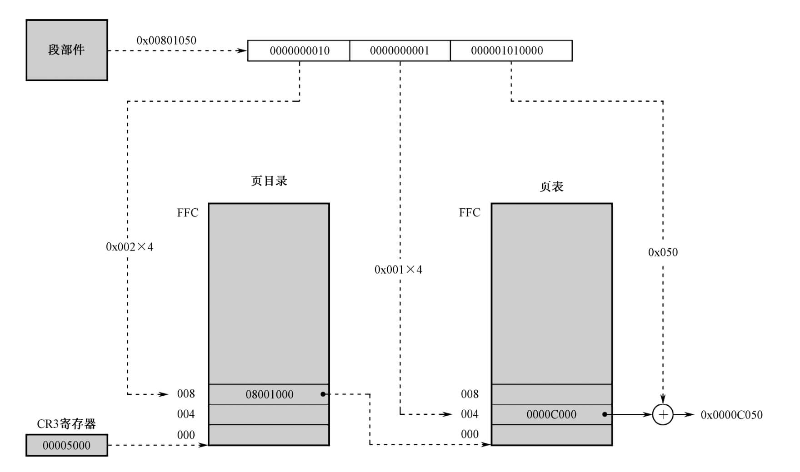页部件把线性地址转换为物理地址
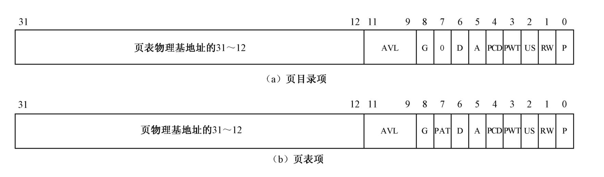页目录项和页表项的组成
- 当任务加载时，操作系统先创建虚拟的段，并根据段地址的高 20 位决定它要用到哪些页目录项和页表项。然后，寻找空闲的页，将原本应该写入段中的数据写到一个或者多个页中，并将页的物理地址填写到相应的页表项中；
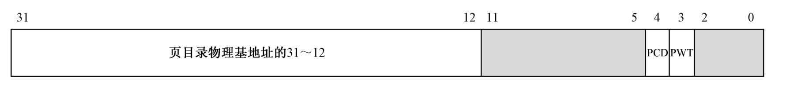控制寄存器 CR3（PDBR）的组成
- 寄存器 cr3 中存放着当前任务的页目录表的物理地址，故又叫作页目录基址寄存器（Page Directory Base Register）；
- 页目录物理基地址的 31~12 位：PDT 物理地址的高 20 位；
- PWT（Page-level Write-Through）位：页级通写位，和高速缓存有关。“通写”是处理器高速缓存的一种工作方式，这一位用来间接决定是否采用此种方式来改善页面的访问效率；
- PCD（Page-level Cache Disable）位：页级高速缓存禁止位，用来间接决定该表项所指向的那个页是否使用高速缓存策略。
- 页目录和页表也是普通的页（起始地址对齐到页），混迹于全部的物理页中。它们的组成如下：
- P（Preset）位：1 - 在内存中；否则，必须先予以创建，或者从磁盘调入内存后方可使用；
- RW（Read/Write）位：0 - 页只读；1 - 页可读可写；
- US（User/Supervisor）位：0 - 只允许特权级别为 0、1 和 2 的程序访问；1 - 允许所有特权级别的程序访问；
- PWT（Page-level Write-Through）位：同上；
- PCD（Page-level Cache Disable）位：同上；
- A（Accessed）位：该位由处理器固件设置，用来指示此表项所指向的页是否被访问过。可用于监控页的使用频率；
- D（Dirty）位：由处理器固件设置，用来指示此表项所指向的页是否写过数据；
- PAT（Page Attribute Table）位：此位涉及更复杂的分页系统，和页高速缓存有关；
- G（Global）位：指示该表项所指向的页是否为全局性质的。如果页是全局的，那么，它将在高速缓存（包括相关的 TLB 条目）中一直保存；
- AVL：软件任意使用位。
- 页目录的前半部分指向任务自己的页表；后半部分则指向内核的页表；
- 从物理内存中分配页时，可以使用“页映射位串（每一位对应一个物理页状态）”来指示每个物理页的位置及分配情况；
- 如果页目录表的最后一个目录项指向当前页目录表自己，那么，无论任何时候，当线性地址的高 20 位是 0xfffff 时，访问的就是页目录表自己；
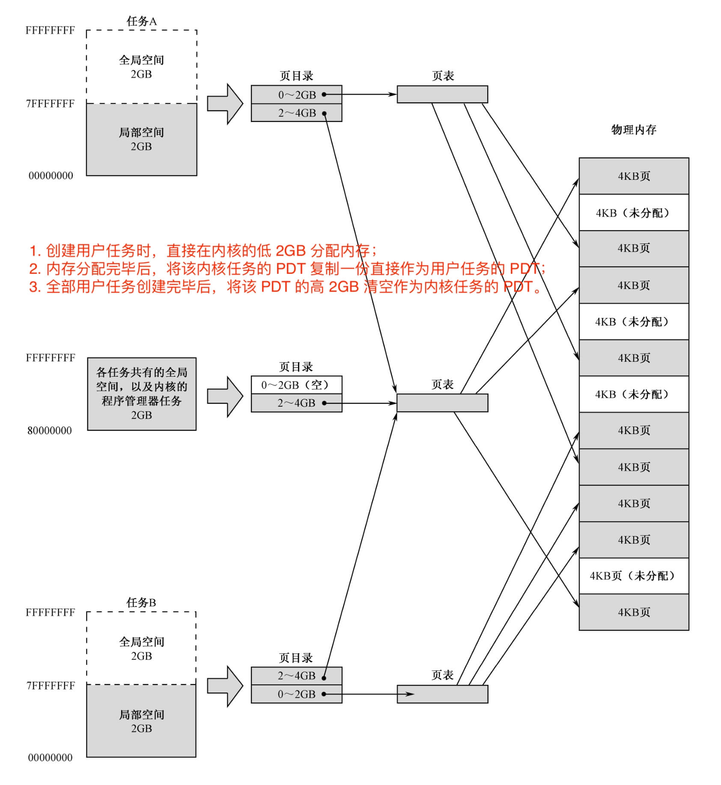多任务环境下的页目录表和页表映射
- 每个任务都有自己的任务状态段 TSS、任务控制块 TCB，以及局部描述符表 LDT。TSS 和 TCB 应该创建在内核的地址空间里，这是为了保证内核能够访问到它们，并对任务进行管理；
- TLB（Translation Lookaside Buffer）结构：
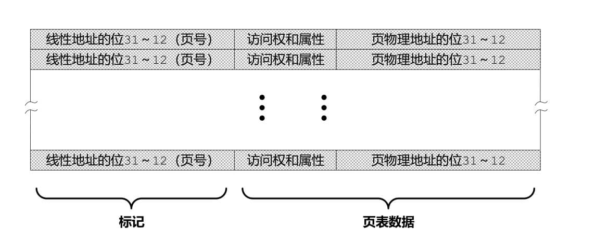
- 加快虚拟地址（逻辑地址）到物理地址的转换效率；
- 第一部分是标记，其内容为线性地址的高 20 位；第二部分是页表数据，包括属性、访问权和页物理地址的高 20 位。在分页模式下，当段部件发出一个线性地址时，处理器用线性地址的高 20 位查找 TLB 中的行，看哪一行的标记部分与这个线性地址的高 20 位相同。如果找到匹配项（命中），则直接使用其数据部分的物理地址作为转换用的地址；如果检索不成功（不中），则处理器还得花时间访问内存中的页目录表和页表，找到那个页表项，然后将它填写到 TLB 中，以备后用；
- TLB 中的访问权（RW/US 位），是页目录项和页表项中，对应访问权的“逻辑与”；
- 对 cr3 的重新写入可以刷新 TLB 的内容。
第 20 章 - 平坦内存模型和软件任务切换
- 流行操作系统上的变化：
- 平坦内存模型：只分一个段，简化内存管理和程序设计；
- 使用软中断或者快速系统调用的方式提供系统服务，更快的速度。
- 32 位 Linux 上采用的 0x80 号中断；
- 64 位系统采用的快速系统调用机制。
- 分页机制下的多段模型：
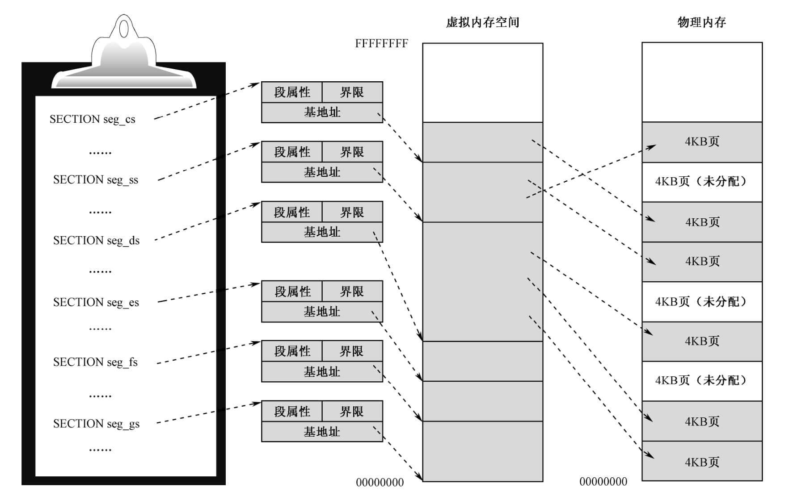
- 分段的做法是随着 8086 处理器的流行和广泛应用而兴起的（16 位地址 + 20 位地址线）；
- 在分页时代，段在虚拟内存里的换入换出是一个没有必要的工作；
- 物理页有自己的属性，也可以进行特权级管理并执行换入换出等调度工作，不需要依赖分段机制（段描述符）。
- 平坦模型（Flat Model）：将全部 4GB 内存整体上作为一个大段来处理，而不是分成小的区块。在这种模型下，所有段都是 4GB，每个段的描述符都指向 4GB 的段，段的基地址都是 0x00000000，段界限都是 0xFFFFF，粒度为 4KB。
- 对 64 位处理器来说，如果是工作在 64 位模式下，则平坦模型是强制使用的；
- 平坦模型下，如果没有开启分页，段内偏移量就是物理地址；
- 平坦模型下，内核程序中例程的调用均是相对近调用，直接用
ret返回； - 平坦模型下，由于段仍具有类型和特权级别，因此内核程序至少分 4 个段：特权级 3 的代码段和数据段、特权级 0 的代码段和数据段；
- 系统调用：
- 典型的系统调用是调用门，用户任务可以通过调用门进入内核，来完成特定工作，这个过程就是所谓的“调用系统服务”。但流行操作系统中更多的会采用软中断的方式来进行；
- 硬件中断可以在任何时候发生，并转去执行中断处理过程。但是，每一个
int n、into和int3指令在执行时，如果当前特权级 CPL 在数值上大于从 IDT 中选择的那个门描述符的 DPL，则将产生一般保护异常 #GP。
- 软件任务切换：
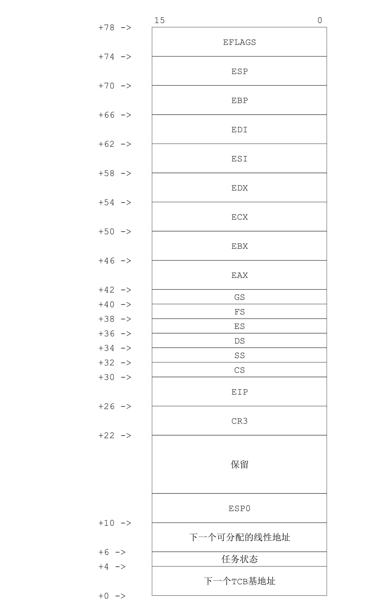新的 TCB 结构（仅供参考）
- 仅使用全局的一个 TSS，由所有任务共用。
- 旧任务的状态保存到它自己的 TCB 中，并从新任务的 TCB 中恢复状态到 TSS；
- SS0、SS1、SS2、ESP0、ESP1 和 ESP2 由新任务负责替换和更新；
- （如果有）从旧任务切换到新任务时，TSS 中的 LDT 选择子由新任务负责替换和更新；
- （如果有）I/O 许可位图部分由新任务修改。
- 从 TCB 中恢复旧任务时，除恢复任务的常见状态域外，由于栈段的 RPL 与 CPL 可能不同，因此需要根据情况模拟从中断返回时的场景。在保护模式下，因发生中断而转入中断处理时，如果特权级不发生改变，则不需要切换栈，只在栈中依次压入 eflags、cs 和 eip 的内容。相反，如果特权级发生了变化，则处理器自动切换栈，并且压入原先的栈段选择子和栈指针，再压入 eflags、cs 和 eip 的内容。
评论 | Comments